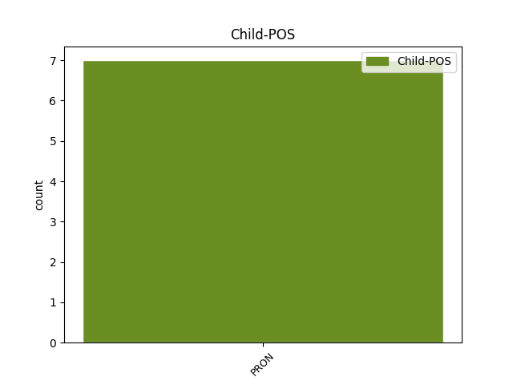

Distribution of features within this leaf

Agreement Rules sorted by frequency.
- When the dependent token is the unk@fixed(unk@fixed) of the head token, and the head token is PRON and the dependent token is PRON.
1 Det _ _ _ _ 0 _ _ _
2 är _ _ _ _ 0 _ _ _
3 lustigt _ _ _ _ 0 _ _ _
4 , _ _ _ _ 0 _ _ _
5 eftersom _ _ _ _ 0 _ _ _
6 han _ _ _ _ 0 _ _ _
7 är _ _ _ _ 0 _ _ _
8 en _ _ _ _ 0 _ _ _
9 författare _ _ _ _ 0 _ _ _
10 och _ _ _ _ 0 _ _ _
11 en _ _ _ _ 0 _ _ _
12 tänkande _ _ _ _ 0 _ _ _
13 människa _ _ _ _ 0 _ _ _
14 , _ _ _ _ 0 _ _ _
15 allt all PRON IND-SG-NOM Definite=Ind|Gender=Neut|Number=Sing|PronType=Tot 0 _ _ _
16 annat annan PRON IND-SG-NOM Definite=Ind|Gender=Neut|Number=Sing|PronType=Prs 15 unk@fixed _ _
17 än _ _ _ _ 0 _ _ _
18 en _ _ _ _ 0 _ _ _
19 kapplöpningshaj _ _ _ _ 0 _ _ _
20 . _ _ _ _ 0 _ _ _
1 Och _ _ _ _ 0 _ _ _
2 där _ _ _ _ 0 _ _ _
3 var _ _ _ _ 0 _ _ _
4 någon någon PRON IND-SG Definite=Ind|Gender=Com|Number=Sing|PronType=Ind 0 _ _ _
5 som _ _ _ _ 0 _ _ _
6 stirrade _ _ _ _ 0 _ _ _
7 på _ _ _ _ 0 _ _ _
8 honom _ _ _ _ 0 _ _ _
9 mellan _ _ _ _ 0 _ _ _
10 gallerstängerna _ _ _ _ 0 _ _ _
11 , _ _ _ _ 0 _ _ _
12 någon någon PRON IND-SG Definite=Ind|Gender=Com|Number=Sing|PronType=Ind 4 appos _ _
13 med _ _ _ _ 0 _ _ _
14 fräknigt _ _ _ _ 0 _ _ _
15 ansikte _ _ _ _ 0 _ _ _
16 , _ _ _ _ 0 _ _ _
17 rött _ _ _ _ 0 _ _ _
18 hår _ _ _ _ 0 _ _ _
19 och _ _ _ _ 0 _ _ _
20 lång _ _ _ _ 0 _ _ _
21 näsa _ _ _ _ 0 _ _ _
22 . _ _ _ _ 0 _ _ _
1 Man man PRON PERS-P3-NOM Case=Nom|Definite=Ind|Gender=Com|Number=Sing|PronType=Ind 0 _ _ _
2 och _ _ _ _ 0 _ _ _
3 hustru _ _ _ _ 0 _ _ _
4 . _ _ _ _ 0 _ _ _
5 Man man PRON PERS-P3-NOM Case=Nom|Definite=Ind|Gender=Com|Number=Sing|PronType=Ind 1 parataxis _ _
6 och _ _ _ _ 0 _ _ _
7 revben _ _ _ _ 0 _ _ _
8 . _ _ _ _ 0 _ _ _
9 Vad _ _ _ _ 0 _ _ _
10 kunde _ _ _ _ 0 _ _ _
11 vara _ _ _ _ 0 _ _ _
12 mer _ _ _ _ 0 _ _ _
13 normalt _ _ _ _ 0 _ _ _
14 än _ _ _ _ 0 _ _ _
15 det _ _ _ _ 0 _ _ _
16 ? _ _ _ _ 0 _ _ _
Disagree Examples:
1 Det _ _ _ _ 0 _ _ _
2 kändes _ _ _ _ 0 _ _ _
3 som _ _ _ _ 0 _ _ _
4 att _ _ _ _ 0 _ _ _
5 ha _ _ _ _ 0 _ _ _
6 tappat _ _ _ _ 0 _ _ _
7 halva _ _ _ _ 0 _ _ _
8 sitt sin PRON RFL-SG-GEN Case=Gen|Definite=Def|Gender=Neut|Number=Sing|Poss=Yes|PronType=Prs 9 mod@poss _ _
9 jag jag PRON PERS-SG-NOM Case=Nom|Definite=Def|Gender=Com|Number=Sing|PronType=Prs 0 _ _ _
10 . _ _ _ _ 0 _ _ _
1 Det den PRON EX-P3SG Definite=Def|Gender=Neut|Number=Sing|PronType=Prs 3 unk@expl _ _
2 är _ _ _ _ 0 _ _ _
3 jag jag PRON PERS-SG-NOM Case=Nom|Definite=Def|Gender=Com|Number=Sing|PronType=Prs 0 _ _ _
4 som _ _ _ _ 0 _ _ _
5 är _ _ _ _ 0 _ _ _
6 Paul _ _ _ _ 0 _ _ _
7 Auster _ _ _ _ 0 _ _ _
8 , _ _ _ _ 0 _ _ _
9 sa _ _ _ _ 0 _ _ _
10 mannen _ _ _ _ 0 _ _ _
11 . _ _ _ _ 0 _ _ _
1 Voldemort _ _ _ _ 0 _ _ _
2 kanske _ _ _ _ 0 _ _ _
3 var _ _ _ _ 0 _ _ _
4 en _ _ _ _ 0 _ _ _
5 skugga _ _ _ _ 0 _ _ _
6 av _ _ _ _ 0 _ _ _
7 sitt sin PRON RFL-SG-GEN Case=Gen|Definite=Def|Gender=Neut|Number=Sing|Poss=Yes|PronType=Prs 9 mod@poss _ _
8 tidigare _ _ _ _ 0 _ _ _
9 jag jag PRON PERS-SG-NOM Case=Nom|Definite=Def|Gender=Com|Number=Sing|PronType=Prs 0 _ _ _
10 , _ _ _ _ 0 _ _ _
11 men _ _ _ _ 0 _ _ _
12 han _ _ _ _ 0 _ _ _
13 var _ _ _ _ 0 _ _ _
14 fortfarande _ _ _ _ 0 _ _ _
15 skräckinjagande _ _ _ _ 0 _ _ _
16 , _ _ _ _ 0 _ _ _
17 fortfarande _ _ _ _ 0 _ _ _
18 slug _ _ _ _ 0 _ _ _
19 och _ _ _ _ 0 _ _ _
20 fortfarande _ _ _ _ 0 _ _ _
21 fast _ _ _ _ 0 _ _ _
22 besluten _ _ _ _ 0 _ _ _
23 att _ _ _ _ 0 _ _ _
24 återvinna _ _ _ _ 0 _ _ _
25 makten _ _ _ _ 0 _ _ _
26 . _ _ _ _ 0 _ _ _
1 GYLLENROY _ _ _ _ 0 _ _ _
2 LOCKMAN _ _ _ _ 0 _ _ _
3 signerar _ _ _ _ 0 _ _ _
4 sin _ _ _ _ 0 _ _ _
5 självbiografi _ _ _ _ 0 _ _ _
6 Mitt jag PRON P1SG-GEN-SG Case=Gen|Definite=Def|Gender=Neut|Number=Sing|Poss=Yes|PronType=Prs 8 mod@poss _ _
7 magiska _ _ _ _ 0 _ _ _
8 jag jag PRON PERS-SG-NOM Case=Nom|Definite=Def|Gender=Com|Number=Sing|PronType=Prs 0 _ _ _
9 i _ _ _ _ 0 _ _ _
10 dag _ _ _ _ 0 _ _ _
11 kl. _ _ _ _ 0 _ _ _
12 12.30 _ _ _ _ 0 _ _ _
13 - _ _ _ _ 0 _ _ _
14 16.30 _ _ _ _ 0 _ _ _